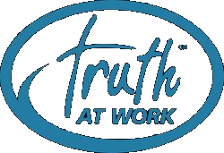

A curated collection of organizations, frameworks, and communities at the intersection of Christian faith and business. These are the voices and resources we trust and return to.
Redemptive Entrepreneurship
Praxis Labs
A community of redemptive entrepreneurs, executives, and investors building ventures that serve the common good. Praxis equips faith-driven leaders with frameworks, cohorts, and a theology of business-as-mission. Their Redemptive Business framework is one of the most rigorous tools available for integrating faith into the strategy and culture of a company.
Community & Podcast
Faith Driven Entrepreneur
A global movement helping entrepreneurs integrate their faith into every part of their business. Offers a widely listened-to podcast, local peer groups, and practical content for owners who believe their work is an act of worship. A great entry point if you are just beginning to explore faith and work.
Biblical Reference
Theology of Work Project
A comprehensive, peer-reviewed biblical commentary on work, economics, and vocation — exploring every book of the Bible through the lens of work. An indispensable reference for anyone serious about understanding what Scripture actually says about how we spend most of our waking hours. Free and fully available online.
Peer Groups
Truth at Work ↗
A proven model for peer advisory groups built around kingdom values. Truth at Work brings together small cohorts of Christ-following business owners for confidential, facilitated conversations about the real challenges of leadership — grounded in Scripture and sharpened by community.
Schedule a conversation ↗